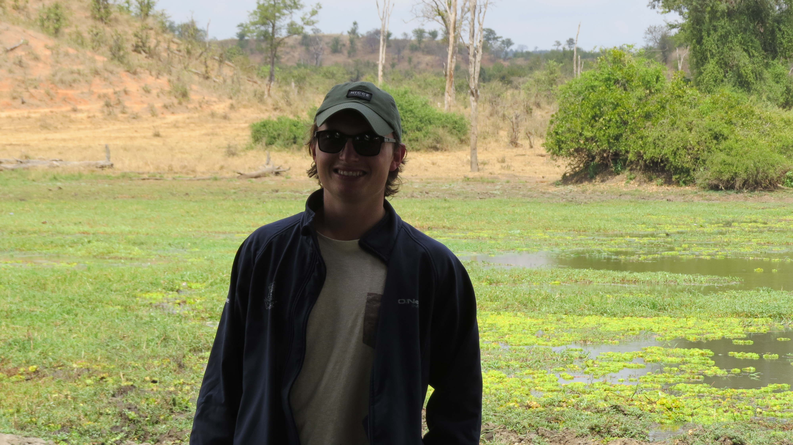

Bio
I am a determined and highly motivated individual, continually striving to further my expertise in business operations and analysis. Having being educated in four countries across three continents, I have gained a broad range of knowledge and experience.
From past and present learning experiences I have accumulated a passion and desire for working in the international business world. Being able to work independently or in a group situation broadens the range of services I can be acquitted to. My ambition leads me to uphold a high work ethic that contributes to my punctuality and social life.
I am currently an Operations Analyst at biNu, an innovative technology company providing #datafree solutions, whilst studying a full stack web development course part-time. Outside of the office, I thoroughly enjoy sport and the outdoors. I live an active lifestyle, one which motivates me maximise the potential of all situations
Contact Information

EQ Values & Traits
- Highly motivated individual
- Adaptibility
- Personable
- Strong communicator
- Natural and willing leader
Work Competencies
- Quantitive analysis - Spreadsheet guru (JQUERY inclusion)
- Product management
- Thorough understanding of the diffusion of innovation and disruptive innovation
- Customer interaction
- Adhoc development
Education
High School
St Andrews College
- Deputy Head of House
- Environmental Portfolio Holder
- 3 A's, 3 B's & a C for IEB Matriculation
- 1st team rugby
Tertiary Education
The University of Edinburgh
- MA (Hons) Business with Enterprise and Innovation (1st Class Honours)
- Member of the Edinburgh University Consulting Club
- Chairman, and player, of the Young Pretenders Rugby Club
- 3rd year exchange programme to the University of British Columbia
Work Experience
biNu
biNu is an innovative technology company that specialises in #datafree solutions. My role is an operations analyst and I work on the following areas of the business
- Quantitive Analysis - financial modeling
- Head of the research business
- Product management
- Business developer
- All round strategist
Internships
I have done internships at the following oranisations:
- Innovative Growth Solutions (Vertical Farming systems manufacturer) I consulted for them on their diffusion of innovation as well as the verification of their environmental credibilities
- PHI (Soft Commodity Trader and Procurer)- commodity trader
- Pyramird Travel (Travel Product Manufacturer) - consulted on their route to European market, mainly which markets were mst lucrative and easily penetratible